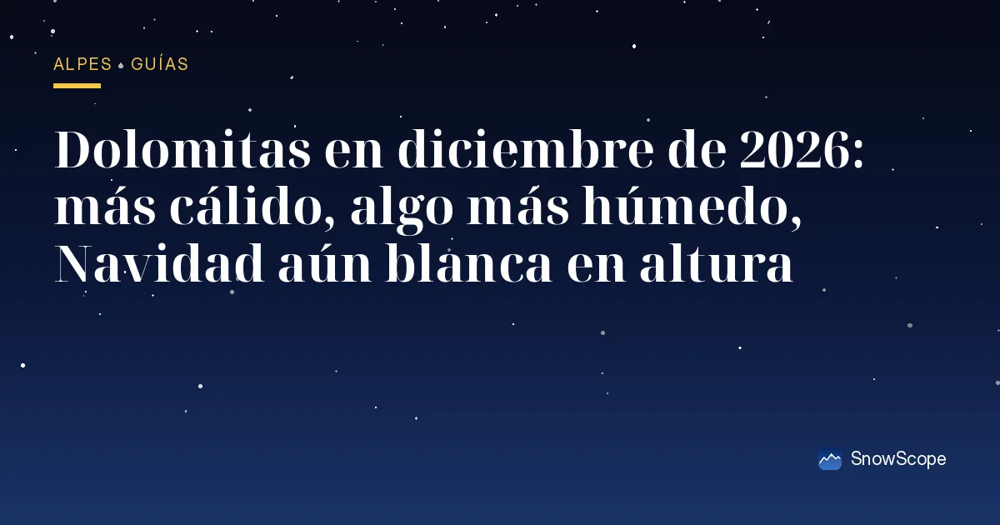
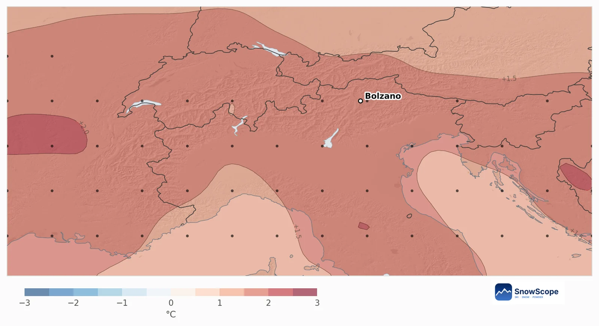
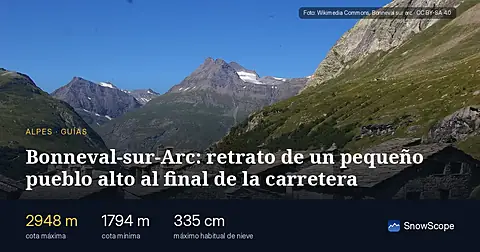

Dolomitas en diciembre de 2026: más cálido, algo más húmedo, Navidad aún blanca en altura
Diciembre en las Dolomitas será más cálido y ligeramente más húmedo que en inviernos anteriores. El mapa de SnowScope no muestra una señal clara en gran parte de la cordillera, con el 42 % inclinándose hacia una nieve más escasa, pero Navidad seguirá siendo muy probablemente blanca en cotas de media montaña.
Consulta la previsión de nieve en tiempo real de Dolomites en la app SnowScopeEspesor de nieve, alertas de nieve polvo y mapa 3D, gratis.

El mapa de nieve cuenta una historia mixta
Cuando comparamos las Dolomitas zona por zona con sus propios diciembres anteriores, el panorama es incierto. En toda la cordillera, el 58 % no muestra una señal clara en ninguna dirección. El 42 % restante se inclina hacia menos nieve, principalmente en los valles del norte de Pustertal y el sureste alrededor de Cadore. Ninguna parte de la cordillera muestra una inclinación hacia más nieve.
Las probabilidades de nieve nueva por encima de lo normal durante diciembre se mantienen modestas: entre el 34 % y el 46 %, con un valor medio del 41 %. En otras palabras, más nieve nueva de lo habitual es posible pero no es el resultado más probable.
Qué hace que diciembre sea más cálido
Cincuenta y uno pronósticos estacionales del centro meteorológico europeo coinciden en que diciembre será aproximadamente 1,7 °C más cálido que el clima de referencia de inviernos anteriores. Ocho de cada diez simulaciones muestran calentamiento. La precipitación se sitúa un 12 % por encima del total habitual de diciembre de 70 mm, pero el conjunto está dividido: el 53 % de las simulaciones son más húmedas.
En las Dolomitas, las grandes nevadas ocurren cuando tormentas llegan desde el sur. Cuando el mes es más cálido, la cota de nieve sube más alto y la precipitación que podría haber sido nieve en cotas bajas cae como lluvia en su lugar. Las cotas medias y altas captan más nieve, mientras que los valles dependen cada vez más de la nieve artificial.


Pronóstico de nieve nueva y profundidad de diciembre
En las principales estaciones de esquí —Val Gardena, Alta Badia, Cortina d'Ampezzo, Val di Fassa y Seiser Alm— un diciembre típico trae 24 cm de nieve nueva a media montaña. Este pronóstico prevé 21 cm. Al 31 de diciembre, la profundidad habitual es 33 cm; la perspectiva es 30 cm. Estos valores están próximos a lo normal, dentro de las variaciones naturales año a año.
La probabilidad de terminar el mes con más nieve que lo usual es del 41 %. Esto significa que aunque son posibles resultados más escasos, el pronóstico no apunta hacia un diciembre notablemente pobre en nieve. Mucho dependerá de cuándo lleguen las tormentas y cuán fuertes sean.
Nieve en Navidad en Val Gardena
Val Gardena a media montaña (1882 m) ha tenido al menos 5 cm de nieve el día de Navidad en 42 de los últimos 45 inviernos —una probabilidad del 93 %. Este pronóstico mantiene ese porcentaje alto: el 91 % del conjunto estacional trae una Navidad blanca. La profundidad esperada el 25 de diciembre es 25 cm, ligeramente menos que los habituales 27 cm, pero aún perfectamente esquiable.
Las laderas más altas de las Dolomitas son aún más fiablemente blancas en Navidad. Los fondos de valle en un diciembre cálido son las zonas inciertas; típicamente dependen del acondicionamiento y de la nieve artificial.
Cómo se compara este diciembre con inviernos anteriores
Los diciembres anteriores con patrones de pronóstico más similares a esta perspectiva son 2014, 2023 y 2013. Ninguno de ellos fue notablemente rico o pobre en nieve; fueron meses ordinarios con nevadas y profundidad en el rango medio. Eso marca el tono para la planificación: espera un diciembre en medio del rango típico.
Una salvedad importa: un único sistema de tormenta desde el sur puede alterar el total del mes por 10 cm o más. El pronóstico de 7 días será tu mejor guía si se aproxima un sistema; observa cuidadosamente el momento y la trayectoria.
Consejos para esquiadores
- Planifica días a principios de diciembre en telesillas y crestas más altas, donde la nieve es más fiable que en los valles.
- Consulta el pronóstico de 7 días semanalmente para sistemas de tormentas que se muevan hacia el sur, que pueden entregar nieve significativa a las Dolomitas.
- Compara el mapa de SnowScope en diferentes valles: la cota de nieve puede variar varios cientos de metros entre Pustertal y Val di Fassa en un período cálido.
- Si tienes planes para Navidad, reserva terreno de media y alta montaña con confianza; las pistas de valle dependerán más del acondicionamiento.
- Viste con capas para mantenerte caliente durante el día pero espera condiciones variables; una anomalía de 1,7 °C significa que algunas pistas pueden tener costras de lluvia a primera hora de la mañana antes de que se endurezcan.
Sobre estas cifras
Los espesores de nieve de las estaciones son la nieve más profunda en las pistas altas en la fecha indicada; son estimaciones para una zona, no una medida en un punto. Las previsiones pueden cambiar. Consulta siempre el boletín oficial de aludes antes de salir fuera de pista.
Citar este informe
Para investigación, docencia o prensa: cifras y gráficos reutilizables libremente bajo CC BY 4.0 con esta cita.
SnowScope (2026), Dolomitas en diciembre de 2026: más cálido, algo más húmedo, Navidad aún blanca en altura, https://snowscope.app/blog/es/2026/11/dolomites-december-2026-snow-outlook.html, consultado el 2026-11-10
SnowScope (Atlas Labs). (2026, November 10). Dolomitas en diciembre de 2026: más cálido, algo más húmedo, Navidad aún blanca en altura. SnowScope snow reports. https://snowscope.app/blog/es/2026/11/dolomites-december-2026-snow-outlook.html
BibTeX
@misc{snowscope2026dolomitesdecember2026sno,
author = {{SnowScope (Atlas Labs)}},
title = {Dolomitas en diciembre de 2026: más cálido, algo más húmedo, Navidad aún blanca en altura},
year = {2026},
month = nov,
howpublished = {\url{https://snowscope.app/blog/es/2026/11/dolomites-december-2026-snow-outlook.html}},
note = {Published 2026-11-10 12:17 UTC; accessed 2026-11-10}
}· CC BY 4.0 · Métodos, datos y herramientas →
Sigue Dolomites
Gratis: un aviso cuando llega la nieve y la previsión cada mañana.
Más partes de nieve

Cortina d'Ampezzo de tres maneras: Tofana, Faloria-Cristallo y Cinque Torri-Lagazuoi, con 46 inviernos de datos de nieve a tres alturas.

Retrato de Bonneval-sur-Arc en la Alta Maurienne: tejados de piedra, un puerto cerrado, un pequeño dominio y una nieve sorprendentemente gruesa, según 46 inviernos pasados.

St. Anton y Ski Arlberg a lo largo del invierno: el espesor de nieve habitual cada mes a tres alturas, a partir de 46 inviernos pasados.